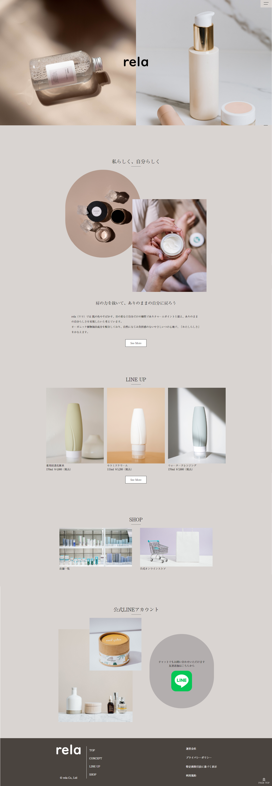
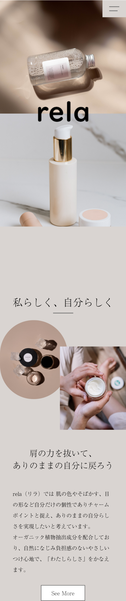

デザイン～コーディングまですべて
架空の自然派化粧品ブランド『rela』WEBサイトのLPを制作しました。
サイトの目的は「ブランドの周知」、「商品の売り上げ向上」としました。
自然派化粧品のWEBサイトであるため、あまり派手になりすぎず、ナチュラルな雰囲気となるよう目指しました。
余白を多めに取り、あしらいも少なめでシンプルにしています。
フォントは、商品価格が高めということもあり、高級感が出るように明朝体を選びました。
デザインカンプ作成・ライティング：約8時間
コーディング・レスポンシブ対応：約8時間×2日（計16時間）
合計：約24時間
『自然派化粧品』であることを意識して取り組みました。
まず、ライティングの際にはNGワードを決め、キャッチコピーや文章には「美白」や「美肌」といった言葉は使用しないように気を付けました。
色は多用せず、メインカラーにはベージュやグレーなど落ち着いた色を選びました。
メイン画像も左右に２分割して大きく見せることで、商品の印象を付けられるようにしました。
スマホ画面では、上下に二分割になるようにレスポンシブ対応しています。
シンプルなデザインだったので、あまり時間をかけずに制作することができました。
反省点としては、スマホ画面での閲覧を想定して、「LINE UP」の商品は横スクロールになるようにしましたがPCだと少しスクロールがしづらいのではないかと思いました。
マウスホイールでのスクロールで、横スクロールできるように設定しても良かったなと思いました。
Photoshop、Dreamweaver、XD
PC
スマートフォン